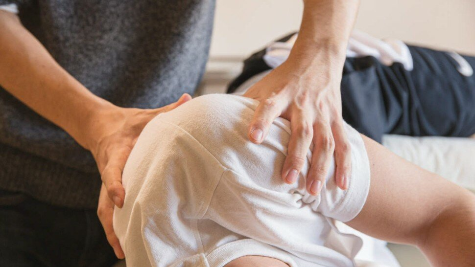

Ostéopathie : définition et interview de Jean-Pierre Marguaritte, kinésithérapeute-ostéopathe

L’ostéopathie (formé à partir d’ostéo‑ et de ‑pathie, tiré du grec ostéon « os », et pathos, « ce qu’on éprouve ») fut créée aux États-Unis à la fin du XIXe siècle par le médecin Andrew Taylor Still (1828-1917) et fait son apparition en France dans les années 1960. Médecine non conventionnelle, l'ostéopathie fonde son traitement sur le lien étroit entre la structure du corps humain et ses fonctions.
Par conséquent, le bien-être d'une personne est défini par l'harmonie entre ses systèmes neurologiques, viscéraux et musculo-squelettiques. L'ostéopathie est une démarche thérapeutique avec une approche holistique du patient. [1]

Sommaire
- Quelle est la définition de l'ostéopathie ?
- Les études scientifiques reconnues en ostéopathie
- Pourquoi aller voir un ostéopathe ?
- Comment se déroule une séance d'ostéopathie ? Quel est son prix ?
- Quelle formation faut-il suivre pour être ostéopathe ?
- C'est quoi la différence entre un kiné et un ostéopathe ?
- Qu'est-ce qu'un ostéopathe animalier ?
- Le mot du professionnel : interview de Jean-Pierre Marguaritte
- Comment devenir ostéopathe ?
- Qu'avez-vous trouvé dans la pratique de l'ostéopathie qui vous a manqué dans la kinésithérapie ?
- Quels sont les principes fondamentaux de l'ostéopathie selon vous ?
- Quel est le rôle de l'ostéopathe ?
- Quelles maladies soignez-vous dans votre activité d'ostéopathe ?
- Quels sont les effets bénéfiques de l'ostéopathie pour les bébés ?
- Sources
Quelle est la définition de l'ostéopathie ?
Les études scientifiques reconnues en ostéopathie
Pourquoi aller voir un ostéopathe ?
Quelle formation faut-il suivre pour être ostéopathe ?
C'est quoi la différence entre un kiné et un ostéopathe ?
Le mot du professionnel : interview de Jean-Pierre Marguaritte
Comment devenir ostéopathe ?
Qu'avez-vous trouvé dans la pratique de l'ostéopathie qui vous a manqué dans la kinésithérapie ?

La manque d’efficacité dans le traitement des pathologies fonctionnelles chroniques qui représente la grande majorité des demandes de consultations, la répétition des séances de rééducation qui s’échelonnent parfois sur plusieurs mois, de ne pas disposer des connaissances suffisantes pour comprendre la cause des échecs, mais aussi l’absence d’indépendance, les actes de kinésithérapie étant prescrit par le médecin.
Quels sont les principes fondamentaux de l'ostéopathie selon vous ?
Quel est le rôle de l'ostéopathe ?
Quelles maladies soignez-vous dans votre activité d'ostéopathe ?
Quels sont les effets bénéfiques de l'ostéopathie pour les bébés ?
Sources
- Histoire de l'ostéopathie. https://www.osteopathie.org/
- L’ostéopathie, définition selon l’Organisation Mondiale de la Santé (OMS). https://www.osteopathe-syndicat.fr/
- Évaluation de l'efficacité de la pratique de l'ostéopathie - 2012. https://www.inserm.fr/
- Ostéopathie: le point sur la formation. https://solidarites-sante.gouv.fr/
- Crédits photos d'entête et corps : ©Ryutaro Tsukata pexels.com